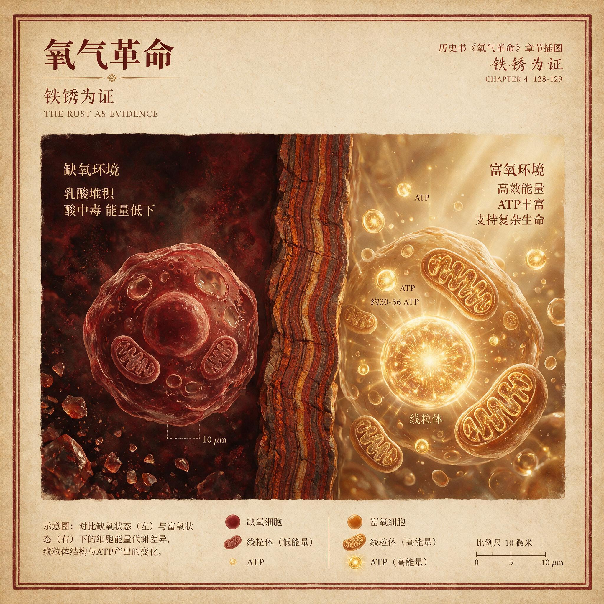

第 2 章
铁锈为证
氧气本该立刻涌入大气。这是任何一个学过高中化学的人都会做出的合理推测：蓝藻演化出了产氧光合作用，它们在海水中释放氧气，氧气从水面逸出，进入大气，大气中的氧含量开始上升。逻辑链条简洁

完整，因果之间没有多余的步骤。
但岩石记录表明，这个推测错了。蓝藻出现之后，大气氧含量在数亿年内几乎没有变化。氧气被某种力量拦截了。
它不是被生物拦截的，而是被海水本身。拦截氧气的物质是溶解态的二价铁离子。
太古宙海洋中的铁浓度达到今天海洋的数千倍甚至上万倍——现代海水每升含铁几十纳摩尔，而当时的海水每升含铁数十到数百微摩尔。
这些铁离子来自洋中脊热液喷口和海底火山，它们均匀分布在全球水体中，形成了一道看不见的化学墙。每当蓝藻释放一个氧分子，这个氧分子在水中的移动距离通常不超过毫米级别，就会被周围的二价铁离子捕获。
四个二价铁离子与一个氧分子反应，生成不溶于水的铁氧化物，以氢氧化铁的形式沉降到海底，随后脱水转化为赤铁矿或磁铁矿。这个过程，正是地质学家普雷斯顿·克劳德在1970年代所观察到的：超过约20亿年的碎屑沉积物含有黄铁矿、铀矿和菱铁矿颗粒等含有还原形式的铁或铀的矿物，这些矿物在较年轻的沉积物中没有发现，因为它们在氧化气氛中会迅速氧化。
这个反应在热力学上是强烈自发的，吉布斯自由能变化为负值，意味着它几乎不可逆。氧分子一旦被铁离子捕获，就永远失去了进入大气的机会。
我们今天在世界各地开采的巨型铁矿，绝大部分来自这个时期的沉淀。澳大利亚西部的哈默斯利盆地、加拿大的拉布拉多地槽、南非的特兰斯瓦尔超群、巴西的卡拉加斯地区、俄罗斯的库尔斯克磁异常区——这些名字出现在全球铁矿石贸易的物流清单上，但它们首先是地质学上的时间胶囊。它们封存的不是普通岩石，而是地球史上最大规模化学战争的直接遗骸。
这些岩石有一个正式名称：条带状铁建造，地质学界习惯缩写为BIF。它们的典型外观极具辨识度——浅灰色的燧石层与暗红色的富铁层交替叠置，单层厚度通常在毫米到厘米级别，整座矿体可以厚达数百米，延伸数十甚至上百公里。在西澳大利亚的哈默斯利盆地，BIF层序的总厚度超过一千米，连续沉积的时间跨度接近四亿年。
如果你站在一座BIF矿山的采掘面上，面对的就是一面石质的计时码表：每一道铁锈色纹路代表一次氧气脉冲被铁离子拦截并沉淀的事件，每一道浅色硅质纹路则代表铁离子供应暂时跟不上、蓝藻活动本身也受到抑制的间歇期。这面时钟走了十亿年。
这就是本章的核心论断：大氧化事件并非一个平滑的充氧过程，而是一场持续数亿年的地球化学拉锯战。它的最忠实的记录者，不是大气样本——我们没有任何太古宙空气可以测量——而是埋藏在全球古老地层中的条带状铁建造。这些岩石以层层叠叠的铁硅交替纹路，记录了氧气每一次试图突破海洋封锁的努力，以及每一次的失败。
要理解这场拉锯战的机制，需要先回到铁离子的来源问题。太古宙地球的内部比今天热得多，地幔对流更剧烈，洋中脊热液活动的强度远超现代。海底热液喷口持续向海水中注入大量还原态物质，其中最主要的就是二价铁离子。在无氧环境中，二价铁可以稳定溶解，不会自发沉淀。
太古宙大气中缺乏氧气，大陆风化作用无法将岩石中的铁氧化为不溶性的三价铁，因此河流输入的溶解铁也能稳定存在于海水中。这两个来源共同维持了太古宙海洋极高的溶解铁浓度，形成了一锅全球性的化学还原汤。
蓝藻提供的正是这锅汤里原本不存在的成分：游离氧。当蓝藻在浅海透光带进行光合作用时，每分解一个水分子就释放一个氧分子。这些氧分子在水中的溶解度有限，但它们首先撞上的不是逃逸到大气中的通道，而是周围无处不在的二价铁离子。反应产物——氢氧化铁——在水中溶解度极低，迅速形成微细颗粒，缓慢沉入海底。在沉积物表层，氢氧化铁脱水转化为更稳定的赤铁矿或磁铁矿，与同时沉淀的二氧化硅交替堆积，形成BIF标志性的纹层结构。
这场化学反应的规模之大，可以通过一个简单的数量级估算来感受。全球BIF矿床的总储量大约在十的十四次方到十的十五次方吨级别，其中铁含量按保守估计占百分之三十到五十。这些铁几乎全部来自二价铁的氧化沉淀。
每沉淀一个铁原子，需要消耗相应当量的氧原子——具体来说，每生成一个四氧化三铁分子，需要消耗四个氧原子。地质化学家的估算表明，仅目前已知的BIF矿床所封存的氧当量，就相当于现代大气中氧气总量的十几倍到二十倍。
换句话说，蓝藻在十亿年间产生的绝大部分氧气从未进入大气。它们被铁离子吃掉了，变成了海底的锈层。
这就是地球的“锈海”——一个行星尺度的化学缓冲池。海洋充当了氧气与大气之间的海绵，铁离子是海绵中的活性吸附位点。只要海水中的二价铁供应不枯竭，任何氧气一旦产生就会被迅速消耗，游离氧在水体中的浓度始终维持在极低水平——可能不到现代大气氧含量的百万分之一。
这种状态意味着，尽管蓝藻在局部浅海区域繁盛了数亿年，它们产生的氧气从未有机会远距离扩散。氧气分子的平均自由程极短，在它们被铁离子捕获之前，可能只移动了微米到毫米的距离。BIF的纹层结构所记录的时间节律，由此可以得到解释。
每一道富铁层代表一段氧气产率相对较高、铁离子供应充足的时期：蓝藻繁盛，氧气释放加速，铁离子被大量氧化并沉淀，在海底堆积出毫米级的铁锈薄层。但这个过程本身会消耗局部水体中的铁离子。
当铁离子浓度下降到某个临界值以下，游离氧开始在水体中积累——这对于蓝藻本身是致命的。我们在上一章已经看到，蓝藻不具备全面的抗氧化防御系统，它们会死于自己制造的氧气。于是蓝藻种群崩溃，氧气产率骤降。
此时，热液活动和河流输入继续向海洋补充新的二价铁，但光合作用的氧气供应却中断了。铁离子不再被快速消耗，它们在水体中重新积累。海洋中的二氧化硅——来自大陆风化和热液活动的溶解硅——在缺乏铁沉淀竞争的条件下开始以燧石形式沉积，形成浅色的硅质纹层。
这就构成了一套自我调节的化学振荡器。蓝藻繁盛，氧气释放，铁离子被氧化沉淀。铁离子耗尽，游离氧积累，蓝藻中毒死亡。氧气产率骤降，铁离子重新积累，硅质沉积。蓝藻在局部避难所缓慢恢复，新一轮循环开始。
每一次循环在海底留下一对铁硅纹层，厚度在毫米到厘米之间。按照这个尺度估算，如果每对纹层代表数年或数十年的周期，那么一座厚达数百米的BIF矿床可以记录数十万到数百万次这样的振荡。这不是一个平滑的充氧过程，而是一场持续数亿年的化学拉锯战，每一次氧气试图突破铁墙的努力都以失败告终，只在海底留下一道锈色的印记。
这套机制直接回答了本书第一章结尾留下的那个尖锐问题：为什么蓝藻出现之后，大气氧含量迟迟没有上升？蓝藻至少在距今二十七亿年甚至更早的中太古代就已经出现，分子化石证据——包括脂类生物标志物——指向可能更早的时间。但大气氧含量的第一次显著上升，发生在距今约二十四点五亿年至二十三点五亿年之间的大氧化事件期间。这中间存在至少四亿年的时间延迟，甚至可能更长。如果蓝藻在理想条件下的繁殖速度可以使其种群在数天内翻倍，那么四亿年的延迟就需要一个强有力的解释。BIF提供的答案是：海洋中的铁离子充当了氧气缓冲池，它吞噬了几乎全部早期光合作用的产物。
总体而言，有机碳和黄铁矿（即硫化亚铁）等物质的埋藏，每年能在全球范围内净产生约15.8±3.3太摩尔（1太摩尔=1012摩尔）的O₂。这一过程构成了地球系统中氧气来源的净通量。
然而，氧气含量的变化速率可以通过全球氧气来源与消耗之间的差值来计算。氧气的“汇”（即消耗来源）包括来自火山活动、变质作用和风化作用所释放的还原性气体和矿物。当与有机碳等还原物质埋藏相关的氧气通量超过了这些氧气汇与还原气体的通量时，大氧化事件便开始了。
蓝藻不是没有产生氧气，而是产生的氧气被化学海绵吸收了。这里需要引入一个对立假说，因为并非所有研究者都同意“铁缓冲池”是氧气延迟的唯一或主要原因。有一派学者提出了通量增加假说，认为问题不在于氧气被消耗，而在于氧气产生得不够多。
这个观点主张，早期蓝藻的光合作用效率可能远低于现代蓝藻，或者海洋中的营养盐——特别是磷和固定态氮——限制了蓝藻的总生物量，使得全球氧气产率长期维持在极低水平。只有当某种构造或气候事件——比如超大陆裂解导致的大陆架面积扩大和营养盐输入增加——触发了蓝藻生产力的飞跃，氧气的产生通量才最终超过了所有消耗汇的总和，导致大气氧含量的上升。
这个假说有其合理之处。现代海洋的初级生产力确实受限于营养盐供应，特别是氮和磷。太古宙海洋中的固定态氮可能极为稀缺，因为当时缺乏好氧的硝化细菌，固氮作用可能是唯一的生物氮源。如果氮供应限制了蓝藻的种群规模，那么全球氧气产率可能确实长期处于低位。
但BIF的存在本身对这个假说构成了部分反驳：如果氧气产率真的极低，为什么会有如此巨量的铁被氧化并沉淀？BIF的规模表明，有大量的氧气曾经被产生——只是它们被铁消耗了，而不是没有被产生。
这就引出了另一个学派的观点：减少汇假说。这个假说并不否认铁缓冲机制，但它进一步追问：为什么铁缓冲最终会失效？它的回答是，海洋中的溶解铁并非无限供应。
铁离子的主要来源是洋中脊热液活动和大陆风化。热液供应的速率受地球内部热量衰减的控制，这是一个缓慢的、不可逆的过程。随着地球逐渐冷却，热液活动强度下降，铁离子输入速率随之降低。大陆地壳的生长和风化作用的增强可能改变了输入海洋的物质组成——特别是硫酸盐的输入增加，它改变了海洋的硫循环，间接影响了铁的迁移和沉淀路径。当铁离子的供应速率最终低于蓝藻的氧气产生速率时，缓冲池开始趋于饱和。铁墙出现了裂缝。
两种假说并不完全互斥。更可能的情况是，氧气通量的增加与消耗汇的减少共同作用，触发了大气氧含量的临界跃迁。
但BIF所记录的核心事实是无可回避的：在长达十亿年的时间里，海洋中的铁离子是氧气最主要的消耗汇，其规模之大，足以吞噬蓝藻产生的几乎全部氧气。这个判断不是推测，而是写在每一层铁锈纹路里的化学账本。
我们可以在现代地球上找到一个微缩类比，帮助理解那个太古宙锈海的运作方式。黑海，位于欧亚大陆之间，是世界上最大的缺氧海盆。
黑海表层水体因与地中海的水交换而维持一定的含氧量，但从大约一百五十米到两百米深度开始，水体中的溶解氧完全消失，进入硫化氢富集的厌氧环境。在这两个水层之间的化学跃变层，溶解氧从上方扩散下来，而还原态的溶解铁和锰从下方缺氧水体中向上扩散。在跃变层中，铁和锰被氧化，形成微细的氧化物颗粒，缓慢沉降回深海。这个过程在现代黑海中规模很小，但化学原理与太古宙BIF的沉积机制完全一致：氧气与溶解铁在化学跃变层相遇，铁被氧化沉淀，氧气被消耗。区别在于尺度。
太古宙的化学跃变层不是局限在一百多米深度，而是可能广泛存在于全球海洋的浅水区域——从海滩到大陆架，凡是蓝藻可以繁盛的透光带，都是氧气与铁离子碰撞的战场。而铁离子的供应来自整个海洋的深部水体，热液活动不断向深海注入新鲜二价铁，洋流和上升流将这些铁离子带到浅海，送入氧化区。这场行星尺度的化学反应的规模，是现代黑海跃变层的数百万倍。
BIF矿床在全球古老克拉通上的广泛分布，证明了这场化学反应的同时性和普遍性。从西澳大利亚的哈默斯利盆地到南非的特兰斯瓦尔盆地，从加拿大的拉布拉多地槽到巴西的卡拉加斯地区，从印度的辛格布姆克拉通到俄罗斯的库尔斯克磁异常区，BIF沉积的时间窗口高度重叠——主要集中在距今二十六亿年到二十四亿年之间。这意味着，当时全球海洋的化学状态是统一的：到处都是溶解铁，到处都在发生氧化沉淀。地球的海洋在那个时期就是一口巨大的锈锅。
这口锈锅不仅吞噬氧气，也在改变自身的化学组成。每一次铁离子被氧化沉淀，海水的还原能力就被削弱一点。
铁是太古宙海洋中最重要的还原剂缓冲，它的消耗意味着海洋的氧化还原电位正在缓慢上升——尽管游离氧浓度仍然极低，但整个化学体系在向氧化方向移动。这是一个几乎不可察觉的渐变过程，持续了数亿年。在此期间，海洋表层的某些微环境——比如蓝藻席垫内部——可能已经出现了局部氧化条件，但整体上，海洋仍然是一个巨大的还原性化学缓冲池。
硫同位素记录为这个渐变过程提供了独立证据。在距今二十四亿年之前，沉积岩中的硫同位素组成表现出显著的质量不依赖分馏特征——这是一种只有在无氧大气中、紫外线光解二氧化硫才能产生的特殊同位素信号。这种信号在二十四亿年之后突然消失，表明大气中的氧气浓度已经上升到了足以形成臭氧层的水平——哪怕只是薄薄一层——从而屏蔽了紫外线对二氧化硫的光解。硫同位素信号的消失与BIF沉积的衰减在时间上高度吻合，共同指向一个结论：大氧化事件并非氧气的“突然出现”，而是氧气在经历了十亿年的化学囚禁之后，终于突破了海洋铁墙的封锁，开始在大气中积累。
这个突破的精确时间点，地质学家仍在争论。最广泛接受的估计是距今约二十四点五亿年到二十三点五亿年之间，但不同地区的记录存在数千万年到上亿年的差异。这种差异本身可能反映了充氧过程的非均一性——某些海盆可能比其他海盆更早耗尽铁离子，局部大气氧含量可能先于全球平均值上升。
但宏观图景是清晰的：在蓝藻出现之后，氧气被海洋铁缓冲池囚禁了至少四亿年，可能长达十亿年。这十亿年，地球的海洋是一口缓慢生锈的锅，而BIF就是那口锅内壁上层层累积的锈痕。
我们现在可以引入一个概念：锈蚀计时器。BIF不仅仅是铁矿资源，它们是氧气与还原性海洋碰撞的化石性计时码表。每一次铁硅交替，都是一场周期性化学振荡在海底留下的年纹。读懂了BIF的纹层，就读懂了大氧化事件的时间结构——它不是一次突变，而是一系列脉冲式氧气释放与铁离子拦截的反复拉锯，持续数亿年，直到铁墙最终被穿透。这个概念的意义在于，它将氧气的历史从抽象的化学方程拉回到具体的、可触摸的岩石记录中。
你可以在西澳大利亚皮尔巴拉地区的哈默斯利盆地亲眼看到这些纹层：暗红色的赤铁矿条带与浅灰色的燧石条带交替叠置，每一层都代表数年到数十年甚至更长的沉积周期。在烈日暴晒的裸露岩面上，铁锈层微微凸起——燧石比赤铁矿更耐风化——使得整个岩面呈现出一种触觉性的条纹纹理。如果你用手抚摸这些岩面，你触碰的是二十四亿年前一次氧气脉冲失败后留下的化学伤疤。
锈蚀计时器还揭示了一个更深层的事实：生命与环境之间的互构并非一蹴而就。蓝藻演化出产氧光合作用，是一个生物学事件；但这个生物学事件要转化为行星尺度的环境变革，必须穿越一堵由地球化学构筑的墙。那堵墙的构筑者不是生命，而是地球本身——它的内部热量驱动热液活动，向海洋注入铁离子；
它的大陆风化向海洋输送溶解硅和其他溶质；它的洋流循环将这些化学物质在全球范围内重新分配。生命提供了一个新的化学通量——氧气；但地球的化学系统决定了这个通量能否改变整个行星的状态。在十亿年的时间里，地球的回答是：不能，至少暂时不能。
这就引出了一个必然的追问：海洋中的溶解铁终有耗尽之日。当这块化学海绵吸饱了，当铁离子供应速率再也追不上氧气产生速率，多余的氧气将去往何方？答案是明确的：氧气将突破海洋的封锁，进入大气。
但这个过程并非温和过渡。当游离氧首次在大气中积累，它将面临新的消耗汇——大气中的甲烷、陆地表面的还原性矿物、以及暴露在氧化条件下的硫化物。氧气的积累不是线性的，而是经历了一系列阈值跃迁。每一个阈值对应一种消耗汇的饱和。铁缓冲是第一个，也是最大的一个。
但它不是最后一个。当氧气最终在大气中站稳脚跟，它将触发一系列连锁反应：甲烷被氧化，温室效应减弱，全球气温骤降。地质记录显示，就在大氧化事件期间和之后不久，地球上发生了史上第一次大规模冰川事件——休伦冰河时期，时间大约在距今二十四点五亿年至二十二点二亿年之间。冰川沉积物——冰碛岩、坠石和纹泥——在全球多个古老克拉通上被发现。一些气候模型甚至认为当时的地球整个表面几乎被冰雪封裹，冰川前沿一直推进至赤道海平面一带。
对刚刚经历氧化毒杀并幸存的微生物而言，这是雪上加霜。海洋被冰层隔绝，阳光透入深度骤减，光合作用本身也受到抑制。冰下海水逐渐缺氧，为厌氧微生物提供了新的避难所，但同时也阻断了营养盐循环路径，使得初级生产力整体崩溃式下降。无法应对双重压力的幸存者数量骤减，被迫退居热液喷口和冰下封闭水体等极端环境。
这就是锈蚀计时器最终指向的后果：铁墙的崩塌并未带来生命的解放，反而触发了新一轮行星尺度的环境筛选。氧气从海洋囚笼中挣脱，却将整个行星拖入了冰封。生命改造了环境，环境反过来筛选生命——这个互构逻辑自大氧化事件起，便刻入了地球生命演化的底层代码。而条带状铁建造，那些层层叠叠的铁锈纹路，是这场互构的第一份书面证词。
它们沉默地记录了氧气如何被囚禁、如何反复冲击铁墙、如何最终穿透化学缓冲、又如何将行星推向下一个危机。读懂这些锈痕，就读懂了生命与行星共同演化的第一幕——不是创世纪，而是一场持续十亿年的化学战争，其武器是氧分子，其战场是全球海洋，其伤亡记录被封存在铁矿石中，等待二十四亿年后的另一群智慧生命前来解读。